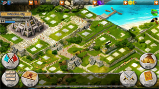

Maya Wars
Maya Wars is a mobile city management / strategy game for Android and iOS. This is the game I worked on during my work placement
| Platforms | Android devices, iOS devices |
|---|---|
| Languages | C++, Java, Objective-C, Javascript |
- Porting of a native application (C++) to Android mobiles (Java).
- Compiling and running native code on Android.
- Mobile specific programming on Android and iOS :
- Various SDKs (in-app purchases, ads, achievements, crash report).
- User inputs (keyboard input,finger controls).
- Output on screen using openGL context.
- General gameplay programming.
- Visual programming like clouds, waves or eagles flying.
- Server-side (Javascript) and client-side (C++) programming.
- Real-time chat system with rooms.
- UI programming for menus and popups.
- Rendering top down view map.
If you would like more details about what I worked on on this game, you can have a look on the report I wrote half-way through my work placement (french).
Here is an example of the Eagle animation that I worked on, as well as the game interface :
Wolfen-doo
Wolfen-Doo is the game I'm currently working on. I aim to bring the odd blend the Wolfenstein 3D style into the Scooby-Doo universe.
| Platforms | PC (possibly Linux and Mac as well since it's Java) |
|---|---|
| Languages | Java, GLSL (shaders) |
I did everything in this game, from game code to most of the "art".
This project started as a school assignment to train myself programming and also discover game programming, making a real-time engine, learning the basics of openGL, 3D mathematics and so much more.
This game was my first introduction to "real" game programming. I did make many other little forgotten games in the past, but most of them were made without a game programming set of mind (they were basically very slow, not optimized and really hard to work with).
I intended the engine to be as easy to use and as intuitive as possible. That way, I could use it again to make more games.
It features :
- Fully working 3D game engine.
- Character movements and simple collisions with the world and other entities.
- Map generator (from custom file or random dungeon generation with seed).
- Fully working sprite animations with configurable file.
- Particle systems.
- Doors.
- Weapons.
- Menus.
- Prototype for A.I with pathfinding.
- And so many other things I can't list
You will be able to find the source code on GitHub, as well as the game executable if you would like to try.
Here are some videos to show what the game is like. Disclaimer: lage is actually caused by the recording software.